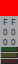
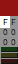
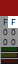
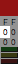
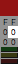
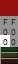
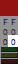

色要素
本ツールでは色要素の管理を次の３成分で行います。
- 赤（Red）
- 緑（Green）
- 青（Blue）
各成分は数値化して表わされ、０から２５５までの２５６段階で管理し、０が成分無し、２５５が最大量を意味します。
そのため、３成分とも値が０であれば色としては黒となり、３成分とも値が２５５であれば色としては白となります。
また、赤（R）と緑（G）の値が２５５であり青（B）の値が０であれば色は黄となります。
なお、パレットウィンドウで色混合を HLS とした場合、表示上は色相（Hue）・明度（Lightness）・彩度（Saturation）となりますが、これは前述の３成分を元に算出した値を表示しているだけで、HLS による色要素の管理はしていません。
色要素の編集
| 色見本 |  | ３成分をまとめて増減します。 主ボタンで +16、副ボタンで -16 です。 |
|---|---|---|
| 赤上位 |  | 赤（R）成分のみ増減します。 主ボタンで +16、副ボタンで -16 です。 |
| 赤下位 |  | 赤（R）成分のみ増減します。 主ボタンで +1、副ボタンで -1 です。 |
| 緑上位 |  | 緑（G）成分のみ増減します。 主ボタンで +16、副ボタンで -16 です。 |
| 緑下位 |  | 緑（G）成分のみ増減します。 主ボタンで +1、副ボタンで -1 です。 |
| 青上位 |  | 青（B）成分のみ増減します。 主ボタンで +16、副ボタンで -16 です。 |
| 青下位 |  | 青（B）成分のみ増減します。 主ボタンで +1、副ボタンで -1 です。 |